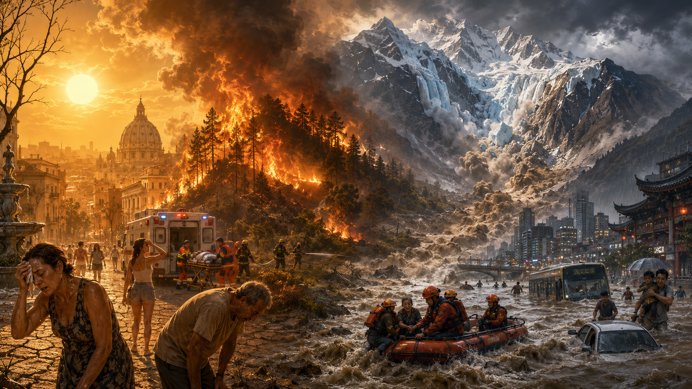

注意：
個々の災害をすべて「気候変動が直接の原因」と断定することはできません。
この記事では、気候変動によって発生確率や強度が高まる可能性がある
熱波、極端な降雨、干ばつ、山火事、雪氷災害などを中心に取り上げています。
2026年5月
| No. | 日付 | 地域 | 災害 | 主な被害・状況 |
|---|---|---|---|---|
| 1 | 5月1日 | インド各地 | 熱波 | 4月から異常高温が続き、5月も熱波日数が平年を上回る見通し。最大電力需要は約256GWと過去最高水準。 |
| 2 | 5月11日 | カナダ・アルバータ州 | 森林火災 | ホワイトコート周辺などで森林火災が拡大。高温・乾燥の中で山火事シーズンが本格化。 |
| 3 | 5月20日ごろ | 米国・カリフォルニア州 | 山火事 | シミバレー周辺で約1,400エーカーが焼失し、1万世帯以上が避難命令の対象となった。 |
| 4 | 5月下旬 | パキスタン | 熱波 | シンド州などで猛烈な暑さ。一部地域では47～50℃に達する可能性が警告された。 |
| 5 | 5月31日 | カナダ・アルバータ州北部 | 森林火災 | フォートマクマレー周辺などで複数の火災が活動。石油施設や集落に接近し、一部で避難警戒。 |
2026年6月
| No. | 日付 | 地域 | 災害 | 主な被害・状況 |
|---|---|---|---|---|
| 6 | 6月上旬 | 中国・新疆 | 洪水 | 世界有数の乾燥地帯であるタクラマカン砂漠周辺で、例年よりかなり早い洪水が発生。 |
| 7 | 6月12日 | 中国・新疆 | 高温・洪水 | 38℃前後の高温に加え大雨が発生。天山・崑崙山脈の雪や氷の融解も河川流量を増加させた。 |
| 8 | 6月19日 | カナダ・ブリティッシュコロンビア州 | 山火事 | リットン付近で火災が拡大。住民への避難命令や幹線道路の閉鎖が行われた。 |
| 9 | 6月23日 | フランス | 熱波 | 南西部ピソスで44.3℃を記録。観測史上でも極めて高い気温となった。 |
| 10 | 6月24日 | 西ヨーロッパ | 大規模熱波 | フランス、英国、イタリアなどが猛烈な熱波に覆われ、パリで40.9℃、英国でも6月として記録的高温。 |
| 11 | 6月下旬 | フランス | 熱波被害 | 熱関連の死亡や水辺での事故が相次ぎ、多数の溺死も報告された。 |
| 12 | 6月下旬 | ヨーロッパ各地 | 熱波 | 家畜・家禽の大量死、学校や観光施設への影響、河川水温上昇による発電出力制限などが発生。 |
| 13 | 6月 | インド | 少雨・干ばつ | モンスーン降水量が平年を大きく下回り、農業や水資源への影響が懸念された。 |
2026年7月
| No. | 日付 | 地域 | 災害 | 主な被害・状況 |
|---|---|---|---|---|
| 14 | 7月上旬 | フランス | 渇水 | 高温と少雨でロワール川などの水位が低下。7月は後に観測史上最も暑い月となった。 |
| 15 | 7月中旬 | 英国・ウェールズ | 山火事 | イングランドとウェールズで多数の火災が発生。北ウェールズでは重大事態が宣言された。 |
| 16 | 7月中旬 | 米国・ミネソタ州 | 森林火災 | カナダ国境付近で火災が拡大。非常事態が宣言され、州兵が投入された。 |
| 17 | 7月中旬 | 中国東北部・華北 | 熱波・豪雨 | 主要農業地帯で高温と豪雨が重なり、トウモロコシや大豆などへの被害が懸念された。 |
| 18 | 7月19～20日 | インド北部・北東部 | 洪水・地滑り | 豪雨による洪水と地滑りで少なくとも25人が死亡。 |
| 19 | 7月21日 | スペイン・グアダラハラ | 山火事 | 数日間にわたり火災が拡大し、1,200人以上が避難。40℃超の高温が消火を困難にした。 |
| 20 | 7月21日 | フランス南部 | 山火事 | ヴァール県で約500ヘクタールが焼失し、住民避難が行われた。 |
| 21 | 7月21日 | バルカン半島 | 雹・暴風雨 | 猛暑の後に激しい雹を伴う嵐が発生し、負傷者や建物被害が出た。 |
| 22 | 7月21日 | セルビア | 渇水 | ドナウ川の水位が記録的に低下し、河川輸送に影響。 |
| 23 | 7月22日 | 中国北部 | 洪水・地滑り | 北京、天津、河北、遼寧などで洪水警戒。重慶周辺では地滑りによる死者・行方不明者も発生。 |
| 24 | 7月22～27日 | フランス・ジロンド県 | 巨大森林火災 | ボルドー周辺で火災が急拡大し、約4万2,000ヘクタールが焼失。 |
| 25 | 7月23～27日 | フランス南西部 | 山火事・避難 | 20万人を超える規模の避難が実施され、多数の住宅が損壊。 |
| 26 | 7月25日 | スペイン | 巨大山火事 | マドリード州やアビラ県などで約4万5,000ヘクタールが焼失し、多数が避難。 |
| 27 | 7月下旬 | スペイン | 山火事 | バレンシアなどでも火災が拡大し、死者が報告された。 |
| 28 | 7月 | インドネシア | 森林・泥炭火災 | 約9万5,000ヘクタールが焼失し、煙害や大気汚染も深刻化。 |
| 29 | 7月 | フランス | 記録的高温 | 全国平均気温は約24.9℃となり、1900年以降で最も暑い月となった。 |
2026年8月
| No. | 日付 | 地域 | 災害 | 主な被害・状況 |
|---|---|---|---|---|
| 30 | 8月1～2日 | ギリシャ・アッティカ地方 | 山火事 | 住宅地近くまで火災が接近し、住民避難が実施された。 |
| 31 | 8月3日 | インドネシア・ブロモ山 | 山火事 | 国立公園内で火災が発生し、約60ヘクタールが焼失。 |
| 32 | 8月7日 | 韓国・ソウル | 熱波 | 40℃近い高温となり、高齢者や屋外労働者への対策が強化された。 |
| 33 | 8月13～14日 | クロアチア・オミシュ | 山火事 | 1人死亡、約40人負傷、約1,200人が避難。 |
| 34 | 8月13日 | ギリシャ・ハルキディキ | 山火事 | リゾート地に火災が迫り、観光客や住民が船などで避難。 |
| 35 | 8月13～14日 | 日本・千葉県 | 集中豪雨・洪水 | 道路や住宅が広範囲に浸水。河川氾濫が発生し、後に死者13人と報じられた。 |
| 36 | 8月16日 | ギリシャ・サラミナ島 | 山火事 | 高齢夫婦2人が死亡し、500人以上が避難。 |
| 37 | 8月16～17日 | ベルギー・ハイフェンス | 森林火災 | 同国史上最大規模の森林火災となり、約3,000ヘクタールが焼失。 |
| 38 | 8月16～17日 | ドイツ・ベルギー国境 | 山火事 | ベルギー側の火災が国境近くまで拡大し、ドイツ側でも避難や警戒が行われた。 |
| 39 | 8月中旬 | ヨーロッパ各地 | 山火事 | フランス、スペイン、ベルギー、ギリシャなどで火災が続き、焼失面積は57万ヘクタール超。 |
| 40 | 8月中旬 | ドイツ・ライン川 | 渇水 | 猛暑と少雨で水位が大幅低下し、船舶輸送や物流に影響。 |
| 41 | 8月 | インド | モンスーン不足 | 降雨量が平年を下回り、綿花、大豆、トウモロコシなどへの影響が懸念された。 |
| 42 | 8月 | インドネシア | 森林・泥炭火災 | 火災ホットスポットが9,000カ所を超え、煙による大気汚染が拡大。 |
| 43 | 8月26日 | ネパール・チベット国境 | 氷河・岩盤崩壊 | 大量の氷と岩石が谷へ落下し、巨大な岩屑流が発生。 |
| 44 | 8月26日 | ネパール | 巨大洪水 | 氷河崩壊後、河川水位が短時間で急上昇し、村、道路、橋、水力発電施設などが流された。 |
| 45 | 8月27日 | ネパール・中国 | 洪水被害 | 死者・行方不明者が急増し、被害が下流域まで拡大。 |
| 46 | 8月27日 | 日本・富山県、石川県 | 大雨・洪水 | 多数の河川が氾濫。約38万人以上に避難が呼びかけられ、孤立集落や停電も発生。 |
| 47 | 8月30～31日 | ネパール | 氷河災害 | 死者・行方不明者がさらに増加し、水力発電施設やトンネルにも大きな被害。 |
| 48 | 8月31日 | インドネシア | 森林・泥炭火災 | 大規模火災が継続し、火災由来の炭素排出量も季節平均を大幅に上回った。 |
わずか4カ月で世界各地に広がった災害
2026年5月から8月までを並べてみると、 一つの種類の災害だけではなく、 熱波、干ばつ、山火事、洪水、地滑り、氷河崩壊などが 世界各地で同時進行していたことが分かります。
5月
インド・パキスタンで熱波。北米では山火事シーズンが本格化。
6月
中国の乾燥地帯で洪水。ヨーロッパでは40℃を超える猛烈な熱波。
7月
ヨーロッパで熱波、干ばつ、巨大山火事。中国・インドでは洪水。
8月
欧州の山火事が続き、日本では集中豪雨。ヒマラヤでは巨大氷河災害。
同じ温暖化が異なる災害を強める
高温 → 土壌・森林の乾燥 → 干ばつ・山火事
高温 → 大気中の水蒸気増加 → 集中豪雨・洪水
山岳部の高温 → 氷河・永久凍土の不安定化 → 崩壊・土石流
洪水、山火事、干ばつ、地滑りなどは昔から存在する自然災害です。
また、都市開発、森林管理、河川管理、地形、失火など、
気候以外の要因も被害の大きさに影響します。
そのため、
「災害が発生した＝気候変動が原因」
と単純化するのではなく、
気候変動によってその災害の発生確率や強度が
どの程度高まったのかを見る必要があります。